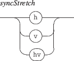

Next: 10.1.3 Controlling the slave
Up: 10.1 Synchronization modes
Previous: 10.1.1 Using the master
Contents
Index

The synchronization stretch mode has the following effect on the slave dimensions:
- h: the slave is horizontally stretched to align its begin and end dates to the corresponding master locations.
- v: the slave is vertically stretched to the master map vertical dimension.
- hv: combines the above parameters.
By default, no stretching is applied.
EXAMPLE
Synchronizing two objects, aligning the slave duration to the corresponding master space and stretching the slave to the master map vertical dimension:
|
/ITL/scene/sync mySlave myMaster hv
|
Grame - INScore project